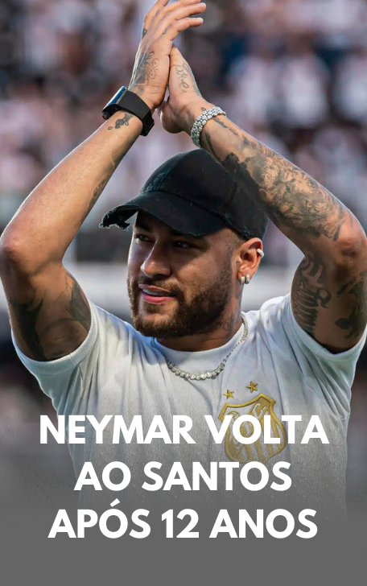

O sonho da torcida santista se tornou realidade: Neymar, um dos maiores ídolos da história do clube e do futebol mundial, voltou ao Santos. O anúncio foi feito através das redes sociais de Marcelo Teixeira, presidente do Peixe, que divulgou um vídeo falando sobre a trajetória do craque e finalizou abrindo as portas do Alvinegro Praiano ao jogador.
Após meses de negociações e alinhamentos estratégicos, o craque retorna ao Santos, pronto para vestir novamente a camisa que marcou o início de sua brilhante trajetória.
Na segunda-feira (27), o Al Hilal e o jogador chegaram a um acordo e acertaram a rescisão do contrato de Neymar com o clube saudita, que era válido até o final do Mundial de Clubes, competição que o Al Hilal vai disputar.
Agora, Neymar é aguardado para sua apresentação, que será feita em duas etapas: primeiro no Pacaembu, depois na Vila Belmiro.
Trajetória
Revelado pelo Santos em 2009, Neymar desde cedo mostrou que era uma joia rara do futebol. Com dribles ousados, gols espetaculares e atuações memoráveis, o atacante correspondeu às expectativas e se consolidou como um dos maiores jogadores da história do clube. Ao longo de sua primeira passagem, Neymar conquistou seis títulos pelo Santos: três Campeonatos Paulistas (2010, 2011 e 2012), a Copa do Brasil (2010), a tão sonhada Copa Libertadores (2011) e a Recopa Sul-Americana (2012).
O jogador também esteve na mira do Flamengo, que optou por não fazer proposta por Neymar. Assim, o caminho ficou aberto para o Santos.
O retorno de Neymar é fruto de um planejamento ambicioso e inovador da diretoria santista. Para viabilizar o acordo, o Santos espera aumentar seus valores de patrocínio e vendas de camisas, garantindo ao clube uma excelente projeção dentro e fora de campo.
